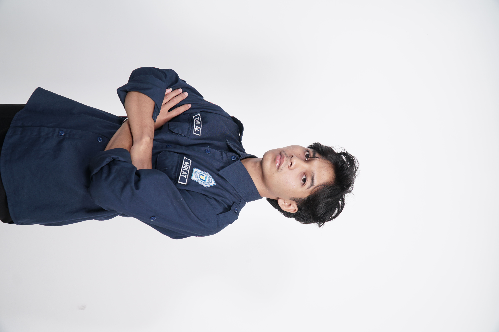

Tugas Pemrograman Web 1
Proyek ini adalah pembuatan halaman profil dan form interaktif menggunakan struktur elemen semantik HTML, tabel terstruktur, dan beberapa elemen input form.

Halo!! Nama saya Muhammad Ibnu Ikhsan. Perjalanan hidup saya menempa fondasi pertamanya di MAN 1 Jepara, tempat di mana saya tidak hanya digembleng secara akademis di jurusan Ilmu Pengetahuan Alam (IPA), tetapi juga dibentuk menjadi pribadi yang tangguh. Di sanalah titik balik besar dalam hidup saya terjadi ketika dipercaya mengemban amanah sebagai Ketua OSIS periode 2024–2025. Mengakhiri masa-masa sekolah dengan memimpin ratusan siswa, merancang berbagai pergerakan, dan mengambil keputusan krusial di tengah dinamika organisasi menjadi kawah candradimuka yang membakar semangat kepemimpinan saya. Pengalaman berharga tersebut bukan sekadar tentang jabatan, melainkan sebuah proses pendewasaan yang mengajarkan arti empati, tanggung jawab, dan ketangguhan dalam menghadapi setiap rintangan.
Setelah melangkah keluar dari gerbang MAN 1 Jepara dengan membawa segudang pelajaran, saya melanjutkan petualangan akademis di Universitas Dian Nuswantoro dengan memilih Program Studi Sistem Informasi. Memasuki era digital, saya melihat teknologi sebagai jembatan masa depan yang harus dikuasai, dan ilmu sistem informasi menjadi wadah utama saya untuk terus berkembang. Api pergerakan yang telah menyala sejak SMA pun tak dibiarkan padam begitu saja; saya kembali mengambil peran aktif dalam organisasi kampus dengan bergabung di BEM Fakultas Ilmu Komputer. Menyeimbangkan antara kompleksitas perkuliahan dan dinamika organisasi menjadi wujud komitmen saya untuk terus menempati ruang-ruang pertumbuhan, menyelaraskan kecerdasan teknologi dengan jiwa kepemimpinan demi menyongsong masa depan yang lebih gemilang.
Halaman web ini dibuat menggunakan HTML5 murni tanpa menggunakan CSS untuk memenuhi instruksi pembuatan struktur dasar web. Dalam pembuatan halaman ini, saya menggunakan berbagai tag HTML untuk menyusun struktur dan menampilkan informasi. Saya juga mempelajari fungsi dari setiap tag agar dapat digunakan sesuai dengan kebutuhan halaman web. Pembuatan halaman ini menjadi salah satu latihan untuk memahami dasar-dasar pengembangan web.
| Tingkat Pendidikan | Nama Instansi | Tahun | Keterangan |
|---|---|---|---|
| Madrasah Aliyah Negeri | MAN 1 Jepara | 2022-2024 | Jurusan IPA |
| Perguruan Tinggi (S1) | Universitas Dian Nuswantoro | 2025-Sekarang | Sistem Informasi |
Proyek ini adalah pembuatan halaman profil dan form interaktif menggunakan struktur elemen semantik HTML, tabel terstruktur, dan beberapa elemen input form.
Silakan isi form di bawah ini untuk mengirimkan pesan: